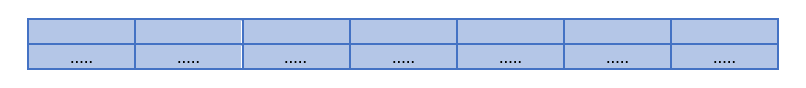

5. Transposisi Kolom
Transposisi kolom dalam kriptografi adalah teknik enkripsi yang melibatkan pengubahan urutan karakter atau simbol dalam sebuah pesan atau teks dengan cara mengatur ulang posisi karakter berdasarkan aturan tertentu yang ditentukan oleh kunci. Dalam transposisi kolom, teks asli dibagi menjadi kolom-kolom, kemudian urutan kolom tersebut diubah sesuai dengan aturan yang ditentukan oleh kunci enkripsi. Kunci enkripsi transposisi kolom biasanya berupa susunan angka atau urutan yang menentukan urutan kolom mana yang harus diambil dan dalam urutan apa.
Analogi Transposisi Kolom
Bayangkan Kita memiliki rak buku dengan beberapa kolom dan setiap kolom berisi tumpukan buku.
- Susunan Awal:
- Kolom 1 : A, B, C
- Kolom 2 : D, E, F
- Kolom 3 : G, H, I
- Transposisi Kolom:
- Kita akan memutuskan untuk menukar posisi kolom-kolom ini. Misalnya, kolom 1 dipindahkan ke tempat kolom 3, kolom 2 tetap di tempat, dan kolom 3 dipindahkan ke tempat kolom 1.
- Susunan Setelah Transposisi:
- Kolom 1 : G, H, I (dulu Kolom 3)
- Kolom 2 : D, E, F
- Kolom 3 : A, B, C (dulu Kolom 1)
Dengan kata lain, transposisi kolom mengubah urutan kolom tanpa mengubah isi kolom. Dalam kriptografi, ini dilakukan untuk mengacak data agar lebih sulit ditebak oleh pihak yang tidak berwenang.
Contoh Soal
Untuk lebih jelasnya, terdapat sebuah pesan yaitu “TENTUKAN PRIORITAS ANDA SEBAB KITA TIDAK DAPAT MENGERJAKAN SEMUANYA X” yang akan dienkripsi menggunakan metode transposisi kolom dengan kata kunci “PENTING” Maka proses enkripsi nya adalah sebagai berikut:
Proses Penyandian
Buat tabel dengan ukuran kolom sesuai dengan panjang dari kata kunci yang telah diproses sebelumnya

Kemudian masukkan kunci kedalam kolom tabel

Selanjutnya, masukan pesan yang akan dienkripsi dengan cara menyisipkannya dari kiri ke kanan secara berurutan
Lalu kunci didefinisikan sesuai urutan abjad menjadi

Setelah itu, kolom dengan urutan abjad terkecil dipindahkan ke posisi depan, diikuti dengan kolom urutan abjad terkecil lainya
Baca huruf ciphertext dari atas kebawah kemudian dimulai lagi dari atas sesuai dengan kolom yang sudah diurutkan
Implementasi Pada Python
Masukkan plaintext
CONTOH : TEKNIK INFORMATIKAplainText = input("Plaintext : ")Masukkan kunci
CONTOH : UDINUSkey = input("masukkan kunci : ")Membersihkan teks dari spasi ganda
cleanPlainTeks = plainTeks.replace(" ", "")
print(cleanPlainTeks)Deklarasi urutan huruf dalam alfabet
ascii = {
'a': 1, 'b': 2, 'c': 3, 'd': 4, 'e': 5, 'f': 6, 'g': 7, 'h': 8, 'i': 9, 'j': 10, 'k': 11,
'l': 12, 'm': 13, 'n': 14, 'o': 15, 'p': 16, 'q': 17, 'r': 18, 's': 19, 't': 20, 'u': 21,
'v': 22, 'w': 23, 'x': 24, 'y': 25, 'z': 26
}Proses Enkripsi
- Inisialisasi list untuk menyimpan urutan numerik dari setiap huruf alfabet
kolom = 0
angka_urutan = []- Mengonversi setiap huruf dalam kata kunci menjadi urutan numeriknya sesuai dengan posisi dalam alfabet
for huruf in key:
if huruf.isalpha():
angka_urutan.append(ascii[huruf.lower()])
kolom = kolom+1
cleanKey = angka_urutan
print(f"Urutan kunci dari kata '{key}' adalah {angka_urutan}")For More Detail :
for huruf in key: Loop ini digunakan untuk memeriksa setiap huruf dalam variabel key, yang diharapkan merupakan kata kunci yang diberikan oleh penggunaif huruf.isalpha(): Kondisi ini memastikan bahwa hanya karakter alfabet yang akan diproses. Karakter non-alfabet akan dilewati- `huruf.lower(): Mengubah huruf menjadi huruf kecil untuk konsistensi, sehingga tidak ada perbedaan antara huruf besar dan kecil
ascii[huruf.lower()]: Mengambil nilai urutan numerik dari huruf. Di sini diasumsikan ada sebuah kamus (dictionary) bernama ascii yang memetakan setiap huruf ke urutan numeriknyaangka_urutan.append(...): Menambahkan urutan numerik dari huruf ke dalam list angka_urutankolom = kolom + 1: Menghitung jumlah kolom dengan menambah nilai kolom setiap kali huruf diprosescleanKey = angka_urutan: Menyimpan hasil akhir urutan numerik ke dalam variabel cleanKey
- Membuat sebuah matriks kosong untuk menyimpan teks yang telah diolah dalam bentuk matriks
matrix = []- Menghitung panjang dari teks yang telah dibersihkan dan disimpan dalam variabel cleanPlainTeks
panjang = len(cleanPlainTeks)- Mencari tahu berapa kali kolom dapat digunakan untuk memuat seluruh teks, dengan membagi panjang teks dengan jumlah kolom
temp = panjang/kolom- Membulatkan hasil pembagian sebelumnya ke bilangan bulat terdekat
bulat = round(temp)- Menghitung jumlah baris untuk memuat teks dalam matriks
if temp - bulat == 0:
baris = bulat
else:
if temp - bulat < 0:
baris = bulat
else:
baris = bulat + 1
print(baris)For More Detail :
temp: hasil pembagian panjang teks dengan jumlah kolombulat: hasil pembagian yang dibulatkan ke bilangan bulat terdekat. Jikatempadalah bilangan bulat (tidak ada sisa), jumlah baris adalah bulat. Jika ada sisa, jumlah baris adalahbulat + 1
- Mengisi matriks dengan karakter dari teks yang telah dibersihkan (cleanPlainTeks)
for i in range(baris):
row = []
for j in range(kolom):
if i * kolom + j < len(cleanPlainTeks):
elemen = cleanPlainTeks[i * kolom + j]
else:
elemen = " "
row.append(elemen)
matrix.append(row)For More Detail :
for i in range(baris): Loop untuk setiap baris dalam matriksrow = []: Inisialisasi list kosong untuk setiap barisif i * kolom + j < len(cleanPlainTeks): Memeriksa apakah indeks saat ini berada dalam rentang panjang teks yang dibersihkanelemen = cleanPlainTeks[i * kolom + j]: Jika indeks berada dalam rentang, maka ambil karakter daricleanPlainTeksberdasarkan indeks yang dihitungelse: Jika indeks melebihi panjang teks, isi elemen dengan spasirow.append(elemen): Menambahkan elemen ke dalam barismatrix.append(row): Menambahkan baris yang telah diisi ke dalam matriks
Mencetak matriks
print("Matriks yang Anda buat:")
for row in matrix:
print(row)- Mentransposisikan matriks yang telah dibuat dan kemudian mencetak matriks yang telah ditransposisikan
transposed_matrix = [[row[i] for row in matrix] for i in range(len(matrix[0]))]
for row in transposed_matrix:
print(row)For More Detail :
for i in range(len(matrix[0])): Iterasi melalui indeks kolom matriks aslirow[i] for row in matrix: Untuk setiap indeks kolom i, ambil elemen i dari setiap baris dalam matriks asli dan akan menghasilkan kolom baru dari elemen-elemen tersebut, membentuk baris baru di matriks yang ditransposisikan
- Membuat list kosong dengan panjang yang sama dengan cleanKey untuk menyimpan urutan indeks
order = [None] * len(cleanKey)- Mengurutkan elemen-elemen dalam cleanKey berdasarkan nilai terkecil hingga terbesar
i = 0
while len(cleanKey) > 0:
non_none_values = list(filter(lambda x: x is not None, cleanKey))
if non_none_values:
nilai_terkecil = min(non_none_values)
marker = cleanKey.index(nilai_terkecil)
order[marker] = i
cleanKey[marker] = None
i = i + 1
else:
break
print(order)For More Detail :
i = 0: Inisialisasi counter iwhile len(cleanKey) > 0: Loop hingga cleanKey kosong (semua elemen None)non_none_values = list(filter(lambda x: x is not None, cleanKey)): Membuat list yang hanya berisi elemen-elemen cleanKey yang bukan Noneif non_none_values: Mengecek apakah list non_none_values tidak kosongnilai_terkecil = min(non_none_values): Mencari nilai terkecil dari non_none_valuesmarker = cleanKey.index(nilai_terkecil): Mendapatkan indeks dari nilai terkecil dalam cleanKey Menyimpan Urutan dan menghapus nilai terkecilorder[marker] = i: Menyimpan urutan i pada indeks marker di list ordercleanKey[marker] = None: Menghapus nilai terkecil dari cleanKey dengan mengubahnya menjadi Nonei = i + 1: Increment counter i
- Mengubah urutan kolom matriks
transposed_matrixberdasarkan urutan yang telah diatur dalamorder, dan kemudian mencetak matriks yang sudah diubah urutan kolomnya
new_matrix = []
while len(order) > 0:
non_none_values = list(filter(lambda x: x is not None, order))
if non_none_values:
nilai_terkecil = min(non_none_values)
marker = order.index(nilai_terkecil)
new_matrix.append(transposed_matrix[marker])
order[marker] = None
else:
break
for row in new_matrix:
print(row)For More Detail :
new_matrix = []: Membuat list kosong new_matrix untuk menampung baris-baris matriks yang baru diurutkan Looping untuk Mengubah Urutan Kolom:while len(order) > 0: Melakukan looping selama masih ada elemen yang tersisa dalam ordernon_none_values = list(filter(lambda x: x is not None, order)): Membuat list non_none_values yang hanya berisi nilai-nilai yang bukan None dari orderif non_none_values: Memeriksa apakah non_none_values tidak kosongnilai_terkecil = min(non_none_values): Menemukan nilai terkecil dari non_none_valuesmarker = order.index(nilai_terkecil): Mencari indeks dari nilai_terkecil dalam ordernew_matrix.append(transposed_matrix[marker]): Menambahkan baris dari transposed_matrix yang sesuai dengan marker ke new_matrixorder[marker] = None: Menghapus nilai yang telah diproses dengan mengubahnya menjadi Noneelse: break: Menghentikan loop jikanon_none_values kosong, yang berarti semua nilai dalam order telah diproses
- Mengonversi matriks
new_matrixmenjadi string tunggal dengan menggabungkan nilai-nilainya secara berurutan dan menghapus spasi ekstra di akhir string
result_string = ""
for row in new_matrix:
for value in row:
result_string += str(value)
result_string = result_string.strip()
print(result_string)For More Detail :
result_string = "": Inisialisasi string kosong result_string yang akan digunakan untuk menyimpan hasil akhirfor row in new_matrix:: Melakukan iterasi melalui setiap baris dalam new_matrixfor value in row:: Melakukan iterasi melalui setiap nilai dalam baris rowresult_string += str(value): Mengonversi nilai value menjadi string (jika belum string) dan menambahkannya ke result_stringresult_string = result_string.strip(): Menghapus spasi ekstra di awal dan akhir string menggunakan metode strip()
HASIL CIPHERTEXT : ENTKFINOKKM TIAIRAProses Dekripsi
Masukkan ciphertext
cipherTeks = input("masukkan kata : ")Masukkan kunci
key = input("masukkan kunci : ")Membersihkan ciphertext dari spasi
cleanCipherTeks = cipherTeks.replace(" ", " ")
print(cleanCipherTeks)- Inisialisasi list untuk menyimpan urutan numerik dari setiap huruf alfabet
kolom = 0
angka_urutan = []- Mengonversi setiap huruf dalam kata kunci menjadi urutan numeriknya sesuai dengan posisi dalam alfabet
for huruf in key:
if huruf.isalpha():
angka_urutan.append(ascii[huruf.lower()])
kolom = kolom+1
cleanKey = angka_urutan
print(f"Urutan kunci dari kata '{key}' adalah: {angka_urutan}")For More Detail :
for huruf in key: Loop ini digunakan untuk memeriksa setiap huruf dalam variabel key, yang diharapkan merupakan kata kunci yang diberikan oleh penggunaif huruf.isalpha(): Kondisi ini memastikan bahwa hanya karakter alfabet yang akan diproses. Karakter non-alfabet akan dilewati- `huruf.lower(): Mengubah huruf menjadi huruf kecil untuk konsistensi, sehingga tidak ada perbedaan antara huruf besar dan kecil
ascii[huruf.lower()]: Mengambil nilai urutan numerik dari huruf. Di sini diasumsikan ada sebuah kamus (dictionary) bernama ascii yang memetakan setiap huruf ke urutan numeriknyaangka_urutan.append(...): Menambahkan urutan numerik dari huruf ke dalam list angka_urutankolom = kolom + 1: Menghitung jumlah kolom dengan menambah nilai kolom setiap kali huruf diprosescleanKey = angka_urutan: Menyimpan hasil akhir urutan numerik ke dalam variabel cleanKey
- Membuat sebuah matriks kosong untuk menyimpan teks yang telah diolah dalam bentuk matriks
matrix = []- Menghitung panjang dari teks yang telah dibersihkan dan disimpan dalam variabel cleanPlainTeks
panjang = len(cleanCipherTeks)- Mencari tahu berapa kali kolom dapat digunakan untuk memuat seluruh teks, dengan membagi panjang teks dengan jumlah kolom
temp = panjang/kolom- Menyimpan jumlah baris yang dibutuhkan dalam matriks setelah pembulatan, membentuk matriks dengan jumlah baris yang cukup untuk menampung semua karakter dalam teks cipher
baris = round(temp)
print(baris)- Membentuk matriks dari teks cipher yang bersih (cleanCipherTeks) dengan jumlah kolom yang tetap, dan jumlah baris yang telah dihitung sebelumnya
for i in range(baris):
row = []
for j in range(kolom):
if i * kolom + j < len(cleanCipherTeks):
elemen = cleanCipherTeks[i + baris * j]
else:
elemen = "a"
row.append(elemen)
matrix.append(row)For More Detail :
for i in range(baris): Loop untuk setiap baris dalam matriksrow = []: Inisialisasi list kosong untuk setiap barisif i * kolom + j < len(cleanCipherTeks): Memeriksa apakah indeks saat ini berada dalam rentang panjang teks yang dibersihkan.elemen = cleanCipherTeks[i * baris + j]: Jika indeks berada dalam rentang, maka ambil karakter dari cleanCipherTeks berdasarkan indeks yang dihitungelse: Jika indeks melebihi panjang teks, isi elemen dengan spasirow.append(elemen): Menambahkan elemen ke dalam barismatrix.append(row): Menambahkan baris yang telah diisi ke dalam matriks
- Mencetak matriks
print("Matriks yang Anda buat:")
for row in matrix:
print(row)- Mentransposisikan matriks yang telah dibuat dan kemudian mencetak matriks yang telah ditransposisikan
transposed_matrix = [[row[i] for row in matrix] for i in range(len(matrix[0]))]
for row in transposed_matrix:
print(row)For More Detail :
for i in range(len(matrix[0])): Iterasi melalui indeks kolom matriks aslirow[i] for row in matrix: Untuk setiap indeks kolom i, ambil elemen i dari setiap baris dalam matriks asli dan akan menghasilkan kolom baru dari elemen-elemen tersebut, membentuk baris baru di matriks yang ditransposisikan
- Membuat list kosong dengan panjang yang sama dengan cleanKey untuk menyimpan urutan indeks
order = [None] * len(cleanKey)- Mengurutkan elemen-elemen dalam cleanKey berdasarkan nilai terkecil hingga terbesar
i = 0
while len(cleanKey) > 0:
non_none_values = list(filter(lambda x: x is not None, cleanKey))
if non_none_values:
nilai_terkecil = min(non_none_values)
marker = cleanKey.index(nilai_terkecil)
order[marker] = i
cleanKey[marker] = None
i = i + 1
else:
break
print(order)For More Detail :
i = 0: Inisialisasi counter iwhile len(cleanKey) > 0: Loop hingga cleanKey kosong (semua elemen None)non_none_values = list(filter(lambda x: x is not None, cleanKey)): Membuat list yang hanya berisi elemen-elemen cleanKey yang bukan Noneif non_none_values: Mengecek apakah list non_none_values tidak kosongnilai_terkecil = min(non_none_values): Mencari nilai terkecil dari non_none_valuesmarker = cleanKey.index(nilai_terkecil): Mendapatkan indeks dari nilai terkecil dalam cleanKey menyimpan urutan dan menghapus nilai terkecilorder[marker] = i: Menyimpan urutan i pada indeks marker di list ordercleanKey[marker] = None: Menghapus nilai terkecil dari cleanKey dengan mengubahnya menjadi Nonei = i + 1: Increment counter i
- Menampilkan matriks setelah melakukan transposisi sesuai dengan urutan tertentu
(order)
transposed_matrix = [transposed_matrix[i] for i in order]
for row in transposed_matrix:
print(row)For More Detail :
transposed_matrix = [transposed_matrix[i] for i in order]: Membuat transposed_matrix baru berdasarkan urutan yang ditentukan dalam orderfor row in transposed_matrix: Mencetak setiap baris dalamtransposed_matrix
- Melakukan transposisi matriks dengam menukar baris dengan kolom
matriks = [[row[i] for row in transposed_matrix] for i in range(len(transposed_matrix[0]))]
for row in matriks:
print(row)For More Detail :
for i in range(len(transposed_matrix[0])): Iterasi melalui setiap indeks kolom dalam transposed_matrixrow[i] for row in transposed_matrix: Mengambil elemen ke-i dari setiap baris dalam transposed_matrix, sehingga membentuk kolom ke-i dalam matriks barufor row in matriks: Iterasi melalui setiap baris dalam matriks yang telah ditransposisi
- Menggabungkan semua elemen dalam matriks transposisi menjadi satu string dan menghilangkan spasi di awal dan akhir
result_string = ""
for row in matriks:
for value in row:
result_string += str(value)
result_string = result_string.strip()
print(result_string)For More Detail :
result_string = "": Menginisialisasi variabel result_string sebagai string kosong untuk menyimpan hasil akhirfor row in matriks: Iterasi melalui setiap baris dalam matriks yang telah ditransposisifor value in row: Iterasi melalui setiap nilai dalam baris tersebutresult_string += str(value): Menambahkan setiap nilai dari baris ke dalamresult_string, nilai tersebut diubah menjadi string terlebih dahulu.result_string = result_string.strip(): Menghapus spasi di awal dan akhir dariresult_stringprint(result_string): Mencetak result_string yang berisi semua elemen matriks yang digabungkan menjadi satu string
HASIL DEKRIPSI : TEKNIKINFORMATIKAPerbedaan Proses :
- Enkripsi: Teks asli diubah menjadi matriks berdasarkan kolom kunci, kemudian kolom-kolom diurutkan berdasarkan kunci. Pada enkripsi,
transposed_matrixadalah matriks transposisi dari matrix awal - Dekripsi: Teks sandi diubah menjadi matriks berdasarkan kolom kunci, kemudian baris-baris diurutkan berdasarkan kunci untuk mengembalikan teks asli. Pada dekripsi,
transposed_matrixdiurutkan berdasarkan order untuk mengembalikan teks asli